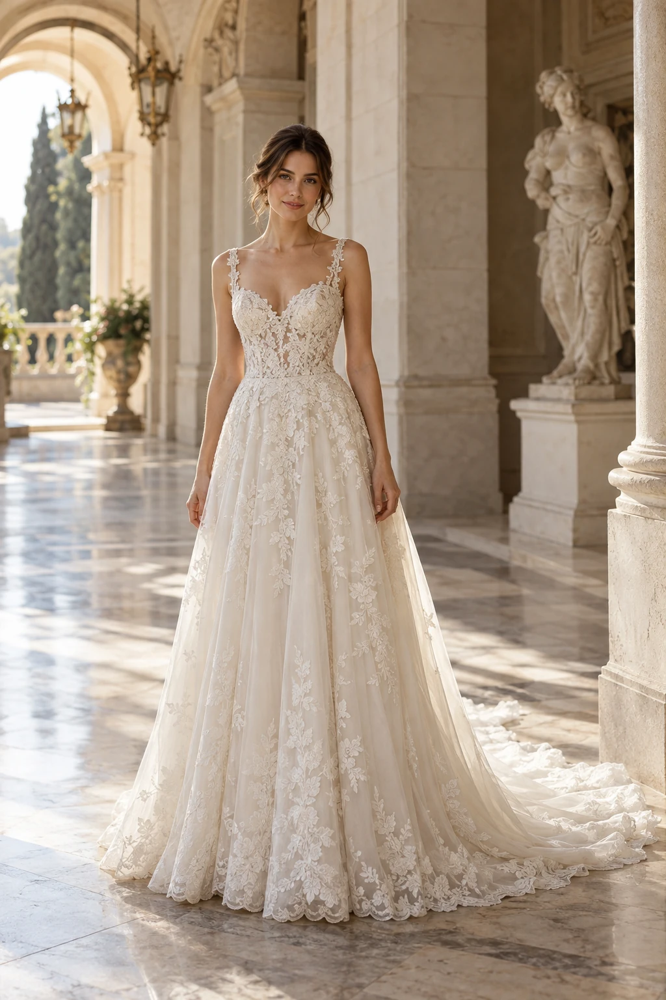
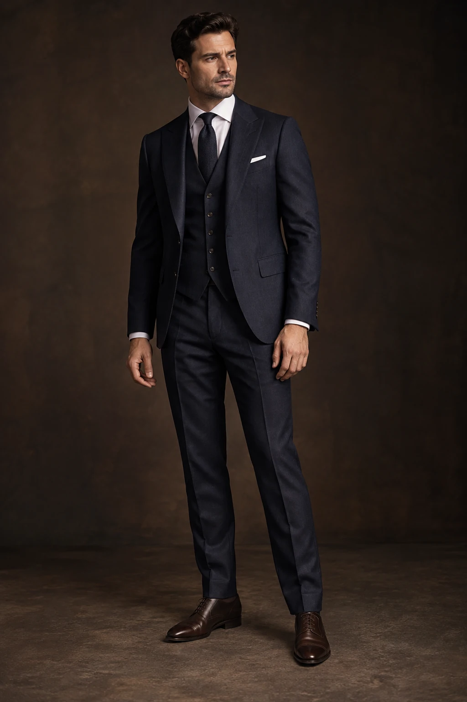
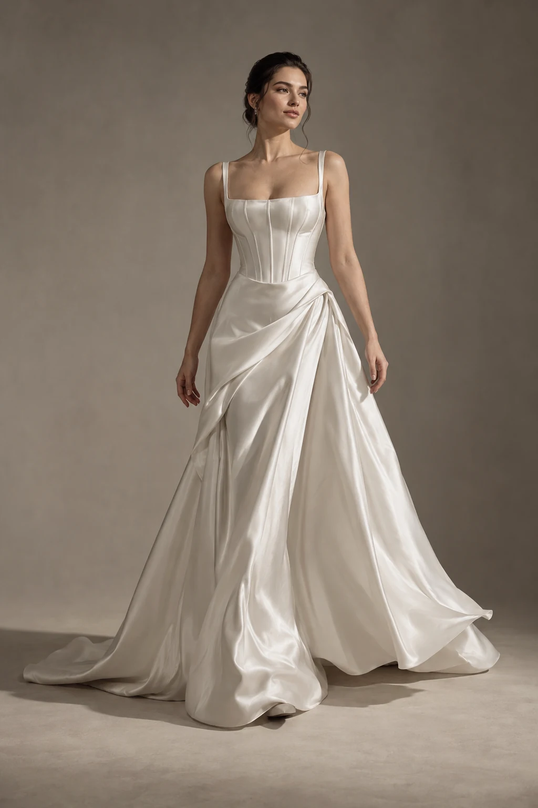

01Свадебная галереяСвадебная галерея
Луначарского, 99Тёплый свет. Большой день.
350+ платьев · 1 час со стилистом
Компания ↗Платье, костюм, образ и настроение большого дня. Отдельный сайт для каждого салона — со своей эстетикой, услугами, ценами и удобным следующим шагом.
Показано 10 из 10

01Свадебная галереяТёплый свет. Большой день.
350+ платьев · 1 час со стилистом
Компания ↗ 02Салон и ателье
02Салон и ательеСовременная свадебная редакция.
1,5 часа на примерку · своё ателье
Компания ↗ 03Свадебный show room
03Свадебный show roomКружево, линии и личная история.
300+ моделей · свадебные и вечерние образы
Компания ↗ 04Вечерний бутик
04Вечерний бутикВаш выход. Ваша сцена.
Вечерние и выпускные платья · размеры 38–62
Компания ↗ 05Современная невеста
05Современная невестаТихая уверенность. Чистый силуэт.
Минимализм · образы для камерных свадеб
Компания ↗ 06Свадебный салон
06Свадебный салонЛюбовь с первой примерки.
500+ платьев · 3 примерочные
Компания ↗ 07Платья для особенного дня
07Платья для особенного дняРомантика в естественном свете.
Свадебные, вечерние и детские платья
Компания ↗
08Мужские костюмыХарактер, который виден.
Костюмы от 12 990 ₽ · подшив включён
Компания ↗
09#НЕКАКУВСЕХВаше платье. Ваши правила.
13-й сезон · конструктор свадебного образа
Компания ↗ 10Парный образ молодожёнов
10Парный образ молодожёновДве истории. Один красивый день.
Для неё и для него · размеры 38–72
Компания ↗Ничего не найдено. Попробуйте другое название или сбросьте фильтр.